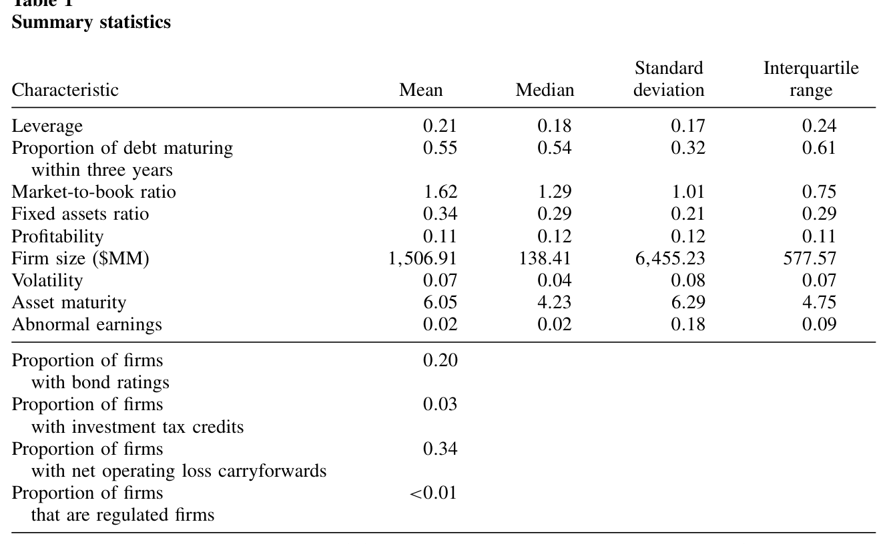
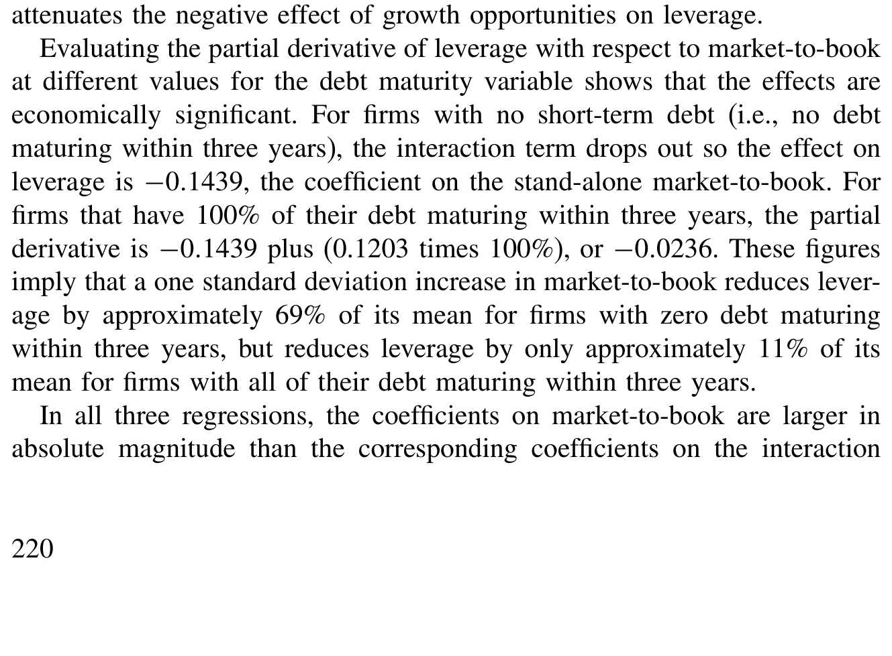
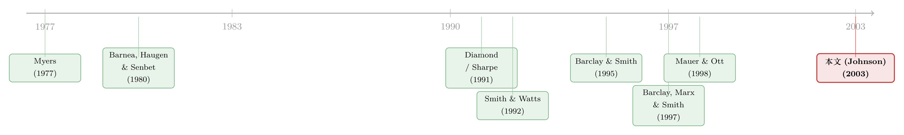

短债能不能「治好」成长型公司不敢借钱的病？
本文读的是 Johnson (2003, Review of Financial Studies)：成长型公司确实可以靠「缩短债务期限」来削弱成长机会对杠杆的负向拖累——缩到极致时，这股负向力量只剩不到原来的六分之一；但缩短期限本身又会抬高流动性风险，反过来压低杠杆。两股力量一拉一拽，恰好解释了一个困扰资本结构文献多年的「矛盾」。
1 一个看起来自相矛盾的事实
先把两件人尽皆知的事摆上桌。
第一件，来自 Myers (1977)。一家手里握着大量成长机会（growth opportunities）的公司，如果同时背着有风险的债，就会陷入「投资不足」(underinvestment)：因为新项目赚来的钱，有相当一部分要先去填债主的坑，股东一算账，干脆把好项目也放弃了。于是 Myers 给出一个干净的预言——成长机会越多的公司，越该少借钱，杠杆 (leverage) 越低。后来 Smith and Watts (1992)、Rajan and Zingales (1995) 拿数据一验，果然如此：杠杆与成长机会之间，是一条稳稳的负相关。
第二件，同样来自 Myers，但常被人忽略：投资不足问题之所以存在，是因为「债到期得太晚」——债要等到投资期权过期之后才还，债主才有机会搭便车。那么反过来，只要把债务期限 (debt maturity) 缩短，让债在投资机会到期之前就先到期、被重新定价，新项目的好处就不会白白漏给债主，投资不足问题自然就被「治」住了。Myers 据此预言：成长机会越多的公司，越偏好短期债。Barclay and Smith (1995)、Guedes and Opler (1996)、Barclay, Marx, and Smith (1997) 的实证，也都看到了成长机会与债务期限之间的负相关——公司确实在用短债。
可把这两件事放在一起，问题就来了。
如果公司真能靠缩短债务期限来化解投资不足，那么成长机会就【根本不该】再对杠杆有任何负面影响——成长型公司大可一边借满债拿税盾，一边用短债把投资不足问题摁住。可数据偏偏一次又一次告诉我们：杠杆与成长机会，仍然是负相关。
这就是本文开篇抛出的那根刺：既然短债能解决投资不足，为什么我们还是看到杠杆和成长机会负相关？（关于「短债到底能不能管住股东」这个母题，还可参见《短债真的能「管住」股东吗？——一个关于「滚动陷阱」的反转》。）
2 缺失的那一半：短债是有代价的
Johnson 的回答，藏在一句被前人放过的常识里：缩短债务期限，并不是免费的。
接着，一个自然的问题是：代价是什么？答案是流动性风险 (liquidity risk)。Diamond (1991, 1993) 和 Sharpe (1991) 的模型说得很清楚：太多债集中在短期到期，公司就要频繁地去市场上「续命」，而续债时贷款人并不会把公司未来的控制租金 (control rents) 算足，于是公司面临着「明明还活得好好的、却被迫低价清算」的风险。这种次优清算 (suboptimal liquidation) 风险，本质上就是一种被抬高了的预期破产成本——而资本结构理论早就告诉我们，破产成本越高，最优杠杆越低。
于是整个故事终于闭合成一个权衡 (trade-off)：
- 短债能降低投资不足成本，从而提高最优杠杆；
- 短债又会抬高流动性风险，从而压低最优杠杆。
一家成长机会更重要的公司，会选更短的债期去对冲投资不足——但它最终的杠杆未必更高，因为短债带来的流动性风险又把杠杆拽了回去。这恰恰能解释那条「顽固」的负相关：公司不是没去缩短期限，而是缩短期限这件事本身又另开了一道压低杠杆的口子。
真正关键的一步，是 Johnson 如何把这个口头上的权衡，翻译成一个【可以被估计、被检验】的计量设定。
3 识别策略：把「成长机会的效应」做成可调节的
这一节是全文的心脏，值得讲透。
Johnson 的核心招数，是在杠杆方程里放进一个交互项 (interaction term)：成长机会 × 短债比例。直觉很朴素——成长机会对杠杆的影响，不该是一个固定的数，而应该【随公司债务期限结构而变】。短债用得越多，投资不足被治得越狠，成长机会的负向拖累就该越弱。
具体地，杠杆方程的右端写成（Lev 为杠杆，MB 为成长机会的代理变量市账比，ST 为「三年内到期债务占比」这个短期债务度量，X 为其余控制变量）：
$$ Lev = \beta_0 + \beta_1\, MB + \beta_2\, ST + \beta_3\,(MB \times ST) + \gamma' X + \varepsilon $$
于是，杠杆对成长机会的偏导数——也就是「成长机会到底压低杠杆多少」——不再是一个常数，而是：
读懂这一个方程，全文就读懂了一大半：
- 第一项 \(\beta_1\) 衡量的是一家完全不用短债的公司所承受的投资不足之痛。这正对应 Myers 笔下「债在投资期权过期后才到期」的世界，所以 \(\beta_1\) 应当为负。
- 第二项里的 \(\beta_3\) 衡量的是短债对这股负向力量的衰减。短债用得越多（
ST越大），衰减越强，所以 \(\beta_3\) 应当为正。 - 而对于一家把债全缩到三年内（
ST = 1）的公司，成长机会的净效应就是 \(\beta_1 + \beta_3\)。如果公司能把投资不足问题完全消除，这个和应当为零。
与此同时，Johnson 还单独保留了 ST 这个独立项，它的系数 \(\beta_2\) 就是用来逮流动性风险的：撇开衰减效应不谈，短债本身若抬高了流动性风险、压低了杠杆，那么 \(\beta_2\) 应当为负。
一个方程里同时塞进了两股相反的力量：交互项 \(\beta_3\)（正，衰减投资不足）和独立项 \(\beta_2\)（负，流动性风险）。这正是本文最聪明的地方——它没有去争论「短债到底好不好」，而是让数据把好处和代价【分开来】各报一个数。
但还有一道坎绕不过去：内生性。Barclay, Marx, and Smith (1997) 在理论上证明了，杠杆和债务期限是被公司【同时】选定的、互为补充的两个决策。这意味着如果直接拿普通最小二乘 (OLS) 去跑、把期限当外生变量塞进杠杆方程，期限项和那些交互项的系数都可能有偏且不一致。
所以 Johnson 用了一套联立方程 (simultaneous equations)：一个杠杆方程、一个期限方程，两者互为内生变量，用两阶段最小二乘 (two-stage least squares, 2SLS) 估计。识别靠的是排除性约束——资本结构理论对资产期限、评级哑变量、期限结构、公司规模平方这些变量不作预测，于是把它们的系数在杠杆方程里限制为零；反过来，期限文献对固定资产比率、盈利能力不作预测，就把它们在期限方程里限制为零。秩条件和阶条件由此满足，系统可识别。
（顺带一提：作者很坦诚地说，即便把债务期限当外生变量处理，衰减效应依然成立——这话给结果的稳健性兜了底。）
4 数据
样本来自 Standard & Poor's Compustat PC Plus 的 active 与 research 文件，1986–1995 年所有非金融公司。之所以从 1986 年起步，是因为这是 Compustat 评级数据完整的第一年；剔除金融公司，是因为 Compustat 不提供它们的债务期限数据，且它们的资本结构受资本充足率等另一套逻辑支配。由于有一个自变量要用到样本年前四年的数据，公司至少要有连续五年数据才能入样。
作者还手动剔除了明显错误的观测（比如「三年内到期债务超过 100%」的公司），以及 14 个评级显示债务已违约的公司——违约后债务里的加速条款会让期限度量失去意义。最终样本是 20,565 个公司-年观测，覆盖 4,945 家不同公司。
几个关键的描述统计很说明问题：杠杆的均值（中位数）是 0.21（0.18），四分位距 0.24；三年内到期债务占比的均值（中位数）是 0.55（0.54），四分位距高达 0.61——也就是说，公司在「用多少短债」这件事上差异极大，这正是识别交互效应所需要的横截面变异。市账比均值（中位数）为 1.62（1.29），说明平均而言公司确有值钱的投资机会，也就确有 Myers 式的投资不足隐忧。

Table 1: contains summary statistics for the various measures. Mean
5 主要结果：衰减是真的，代价也是真的
结果干净利落地站在了理论这一边。
第一，衰减效应强且显著。 对一家债务全部在三年内到期的公司，成长机会对杠杆的负向效应，还不到一家债务全在三年之外到期的公司的六分之一。换句话说，\(\beta_1 + \beta_3\)（全短债时的净效应）的绝对值，比 \(\beta_1\)（全长债时的效应）小了至少六倍。短债，确实把投资不足的痛感大幅压了下去。
但请注意——
第二，衰减并不彻底。 即便对最短期限的那批公司，成长机会的效应也没有归零。\(\beta_1 + \beta_3\) 仍显著为负。这说明公司没法靠缩短期限把投资不足问题【完全】消除。也正是这残余的负效应，解释了为什么资本结构文献始终能看到那条杠杆-成长机会负相关——哪怕公司有缩短期限这把武器。
第三，流动性风险效应显著为负。 独立的短债项系数 \(\beta_2 < 0\)，与 Diamond (1991, 1993)、Sharpe (1991) 的预言一致：短债越多，次优清算风险越高，杠杆越低。

Table 3: presents the results of the pooled, cross-sectional, and fixed-effects
而真正让这个故事「反转」并立体起来的，是评级这条切割线。
流动性风险对谁更要命？答案是低信用质量、且很难拉长债期的公司。无评级公司平均信用质量更低，又主要从银行和非银私人贷款人那里借钱、平均期限本就更短（Carey et al., 1993），所以更难把债期拉长。Johnson 据此预测、并验证了：流动性风险效应对无评级公司在量级上显著更大。
把衰减效应和流动性风险效应这两股力量合起来看，短债对杠杆的净效应竟然取决于公司有没有评级：
- 对无评级公司：流动性风险效应压倒了衰减效应，缩短期限的净效应是负的。它们可以试图用短债去对冲成长机会的拖累，但到头来杠杆并没升上去——流动性风险的负向直接效应，反而把那点正向衰减抵消有余。这也再一次解释了那条顽固的负相关。这与 Mauer and Ott (1998) 的理论模型相呼应：缩短期限以减轻投资不足的公司，也会为了躲流动性风险而降低杠杆。
- 对有评级公司：减轻投资不足的正效应压倒了流动性风险，缩短期限的净效应是正的。它们可以放心地用短债去治投资不足，而不必因为流动性风险被迫减杠杆。
对整个样本而言，杠杆与短债之间是净负相关（等价地说，杠杆与更长期限正相关）——这与 Barclay and Smith (1995)、Stohs and Mauer (1996) 在单方程里发现的「长债公司杠杆更高」是一致的。
6 文献脉络
把这条线捋一遍，会看到一段「理论先行、实证补全、最后被一篇文章接上」的过程。
起点是 Myers (1977)，他同时埋下了两颗种子：投资不足会压低杠杆，以及缩短债期可以缓解投资不足。但在很长一段时间里，这两颗种子是分头生长的。一边，Barnea, Haugen, and Senbet (1980) 指出短债还能缓解资产替代 (asset substitution) 问题；另一边，Smith and Watts (1992)、Rajan and Zingales (1995) 把「杠杆—成长机会负相关」做成了资本结构文献的常识。

接着，债务期限本身成了独立的研究对象：Barclay and Smith (1995)、Guedes and Opler (1996) 验证了成长机会与短债正相关，Stohs and Mauer (1996) 系统刻画了期限的决定因素，而 Barclay, Marx, and Smith (1997) 更进一步，把杠杆和期限刻画为「战略互补」、并用联立方程同时估计。与此同时，短债的代价也在理论端被夯实——Diamond (1991, 1993) 和 Sharpe (1991) 把流动性风险写进了模型，Mauer and Ott (1998) 则把「缩期限减投资不足 / 降杠杆避流动性风险」装进了同一个实物期权框架。
Johnson (2003) 站的，正是这两条支流的交汇处：它第一次把「衰减投资不足」和「抬高流动性风险」这两股相反的力量，放进同一个联立方程，让数据各报一个数，从而把那条看似矛盾的负相关讲圆了。（这条「债务期限」的脉络后来还在延伸，比如把期限管理和信用周期挂钩的《晴天才借得起伞》，以及把竞争威胁写进期限选择的《威胁还没来，债先「续」上了》。）
7 评论与延伸（Q&A + 研究方向）
(a) 几个可能的疑问
Q：交互项里的「衰减」和独立项里的「流动性风险」，会不会其实是同一个东西的两个名字？
不是。两者在方程里由不同的项捕捉，方向也不同：衰减是交互项 \(\beta_3\)（正号，只在有成长机会时才发力），流动性风险是独立项 \(\beta_2\)（负号，无论有没有成长机会都存在）。识别它们靠的是
ST与MB×ST的变异不完全重合——同样用很多短债的两家公司，成长机会高的那家在交互项上权重更大。
Q：「不到六分之一」这个数，到底是回归出来的系数比，还是某种含糊的描述？
它是 \(|\beta_1+\beta_3|\) 与 \(|\beta_1|\) 的比值——全短债公司 vs 全长债公司，成长机会对杠杆的边际效应之比小于 1/6。这是从估计出的两个系数算出来的实打实的量级，不是定性说法。
Q：联立方程的识别靠排除性约束，这些约束可信吗？
这是全文最该被盯住的地方。作者的逻辑是「理论不作预测就限制为零」：资本结构理论不预测资产期限、评级、期限结构、规模平方对杠杆的影响，于是把它们排除出杠杆方程；期限理论不预测固定资产比率、盈利能力对期限的影响，于是排除出期限方程。秩/阶条件由此满足。但「理论没说」不等于「现实中没有」——比如评级很难说对杠杆毫无直接影响，这类约束的合理性是可以争论的。
Q：用「三年内到期债务占比」当短期债务度量，会不会系统性低估了真实的短债使用？
会，而且作者自己承认。可赎回债 (callable debt) 和违约时的加速条款，都让公司事实上的「短期性」比这个比例显示的更高。但这恰恰是一个对结论【有利】的偏差：度量低估短债，会让衰减效应更难被发现，所以能发现强衰减反而更可信。作者也用两年、四年、五年的口径做了稳健性检验。
Q：为什么衰减效应不彻底（残余负效应仍在）这件事，反而是个「好消息」？
因为它解决了开篇那个悖论。如果衰减彻底、成长机会的效应归零，那资本结构文献里那条顽固的负相关就无从解释了。残余负效应的存在——加上无评级公司那股压倒性的流动性风险——正好说明：公司确实在用短债，但治不彻底，于是负相关依然可见。
Q：这跟 Parrino and Weisbach (1999) 的结论冲突吗？
表面上冲突。他们用模拟法估计投资不足扭曲的量级，认为这些扭曲太小、不足以解释杠杆-成长机会负相关。但 Johnson 的实证显示公司确实在用短债主动衰减投资不足，且短债对部分公司是有代价的（压低了杠杆）。两者孰是孰非，本身就是个值得继续打的官司。
(b) 几个可能的研究问题与提案
1. 把「流动性风险」从评级哑变量升级为债券市场的直接度量。 【经济故事】本文用「有没有评级」当流动性风险的粗代理，但流动性风险本可以更直接地从二级市场买卖价差、再融资频率里读出来。如果能用更细的流动性度量替代评级，衰减/流动性两股力量的相对大小会更可信。 【可行性】中。需要把公司层面的债务期限数据，与 TRACE 之类的公司债二级市场流动性数据匹配（样本会缩到有公开债的公司）。识别上仍可沿用本文的联立方程框架。
2. 信用周期里的「期限—杠杆」权衡如何随时间摆动。 【经济故事】本文是 1986–1995 的横截面/面板平均效应。但流动性风险在信用收紧时会突然变贵，衰减与流动性两股力量的相对强弱很可能是【时变】的——衰退里公司也许宁愿放弃衰减投资不足，也要拉长债期避险。 【可行性】高。把样本延长到含数次信用周期，在交互项上再叠加宏观信用利差或货币政策状态即可。可与《晴天才借得起伞》的思路对接。
3. 外资持有人是否改变了「流动性风险」这道约束。 【经济故事】无评级、靠银行借短债的公司，流动性风险最重。如果一家公司的债被更多元、更有耐心的外资债权人持有，它续债时被迫低价清算的风险是否下降，从而让短债的衰减效应「净」出来？ 【可行性】中。需要债券持有人结构数据（如各国央行/监管的持有人明细）与公司财务匹配，识别上可借助持有人结构的外生冲击。
4. 可赎回长债 vs 真短债：两条对冲投资不足的路径谁更优。 【经济故事】Barnea, Haugen, and Senbet (1980) 指出公司也可以用「可赎回的长期债」来对冲投资不足，而不必承受短债的流动性风险。那么在均衡里，什么样的公司选短债、什么样的选可赎回长债？ 【可行性】中。需要区分债务的可赎回特征（FISD 之类的债券条款数据库可做到），把本文的短债度量拆成「真短」与「可赎回长债」两类分别进交互项。
参考文献
- Barnea, A., R. A. Haugen, and L. W. Senbet (1980). A Rationale for Debt Maturity Structure and Call Provisions in the Agency Theoretic Framework. Journal of Finance 35, 1223–1234.
- Barclay, M. J., and C. W. Smith, Jr. (1995). The Maturity Structure of Corporate Debt. Journal of Finance 50, 609–632.
- Barclay, M. J., L. M. Marx, and C. W. Smith, Jr. (1997). Leverage and Maturity as Strategic Complements. Working paper, University of Rochester.
- Diamond, D. W. (1991). Debt Maturity Structure and Liquidity Risk. Quarterly Journal of Economics 33, 341–368.
- Diamond, D. W. (1993). Seniority and Maturity of Debt Contracts. Journal of Financial Economics 33, 341–368.
- Guedes, J., and T. Opler (1996). The Determinants of the Maturity of Corporate Debt Issues. Journal of Finance 51, 1809–1834.
- Johnson, S. A. (2003). Debt Maturity and the Effects of Growth Opportunities and Liquidity Risk on Leverage. Review of Financial Studies 16(1), 209–236.
- Mauer, D. C., and S. H. Ott (1998). Agency Costs, Investment Policy and Optimal Capital Structure: The Effect of Growth Options. In M. J. Brennan and L. Trigeorgis (eds.), Project Flexibility, Agency, and Competition, Oxford University Press.
- Myers, S. C. (1977). Determinants of Corporate Borrowing. Journal of Financial Economics 5, 147–175.
- Parrino, R., and M. Weisbach (1999). Measuring Investment Distortions Arising from Stockholder-Bondholder Conflicts. Journal of Financial Economics 53, 1–42.
- Rajan, R. G., and L. Zingales (1995). What Do We Really Know About Capital Structure? Some Evidence From International Data. Journal of Finance 50, 1421–1460.
- Sharpe, S. A. (1991). Credit Rationing, Concessionary Lending, and Debt Maturity. Journal of Banking and Finance 15, 581–604.
- Smith, C. W., Jr., and R. L. Watts (1992). The Investment Opportunity Set and Corporate Financing, Dividend, and Compensation Policies. Journal of Financial Economics 32, 263–292.
- Stohs, M. H., and D. C. Mauer (1996). The Determinants of Corporate Debt Maturity Structure. Journal of Business 69, 279–312.
我的判断。 这篇文章的贡献在于「问题问得准」：它没有去重复验证「短债对不对」，而是抓住了文献里一个真实的逻辑裂缝——既然短债能治投资不足，那条负相关为何不死——并用一个交互项把答案拆成「衰减」与「流动性风险」两股可分离的力量。把内生性用联立方程认真处理、再用评级把样本切成两半看净效应翻转，是全文最有说服力的设计。最该存疑的，是识别完全依赖那套「理论没预测就排除为零」的约束——评级、资产期限对杠杆未必真的零影响，一旦约束站不住，那些交互项系数就可能有偏。后续我最想看到的，是把粗糙的「评级哑变量」换成债券市场里直接、时变的流动性度量，并把这套权衡放进一个完整的信用周期里检验——因为流动性风险的价格，恰恰是在市场快「干涸」的那一刻才最贵。